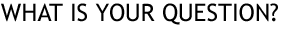

Spike's 8-Ball reaches into the future, to find the answers to your questions. It knows what will be, and is willing to share this with you.
Just think of a question that can be answered "Yes" or "No", concentrate very, very hard, and click on the "Ask" button. Then let Spike's 8-Ball show you the way!
Spike's 8-Ball is an homage to the world-famous Magic 8-Ball, which is a registered trademark of Tyco Toys, Inc.
This software was written by ->Spike